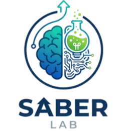

Compartir contenidos
Puede escribir explicaciones e información para que los estudiantes las consulten.

SaberLAB está pensada para que los profesores vinculados a una institución puedan organizar y compartir materiales con sus estudiantes.
Conoce el rol del profesorEl profesor puede preparar contenidos de acuerdo con los grados y las materias que ofrece la institución, para apoyar el estudio dentro y fuera del aula.
Puede escribir explicaciones e información para que los estudiantes las consulten.
Puede organizar actividades y trabajos relacionados con los temas de la clase.
Los materiales pueden incluir imágenes, videos y archivos, además de texto.
Los contenidos se preparan para el grado y las materias disponibles en la institución.
La idea es que el material se prepare y se comparta siguiendo estos pasos:
El profesor organiza el contenido según el grupo al que está dirigido.
Puede escribir la información o incluir recursos como imágenes, videos y archivos.
Para que los estudiantes reciban nuevos contenidos, el dispositivo debe conectarse a internet.
Una vez que tengan el material disponible en su aplicación, podrán revisarlo incluso sin conexión.
SaberLAB se plantea como un apoyo para una institución educativa y sus profesores. La institución define las materias disponibles, y el profesor prepara los recursos que considere útiles para acompañar el aprendizaje de sus estudiantes.